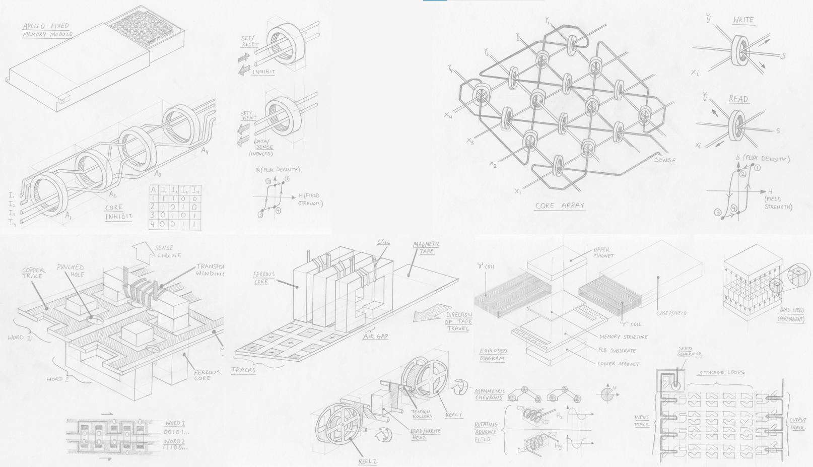
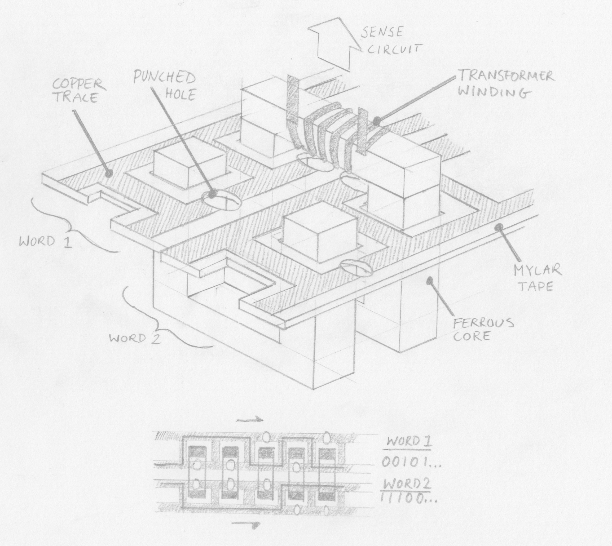
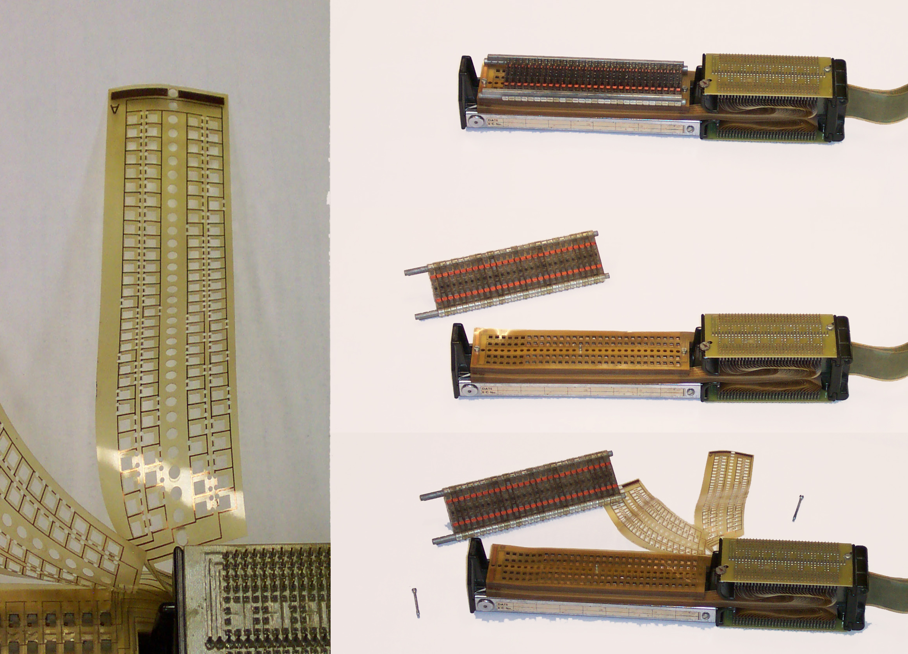
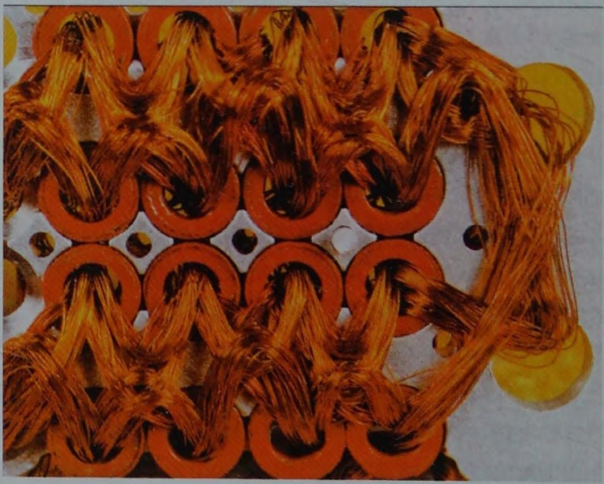
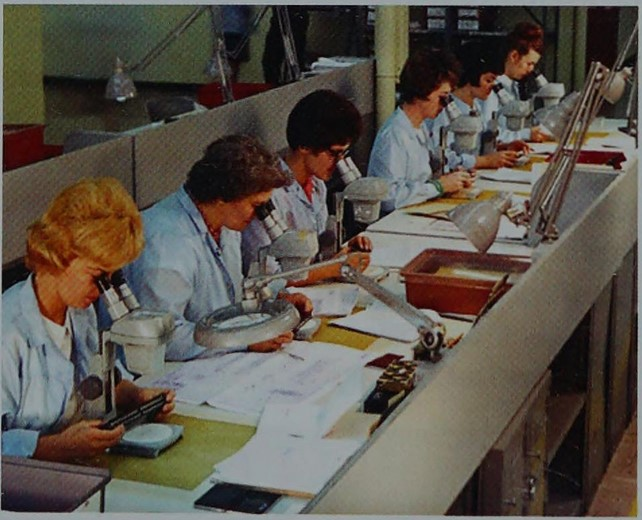
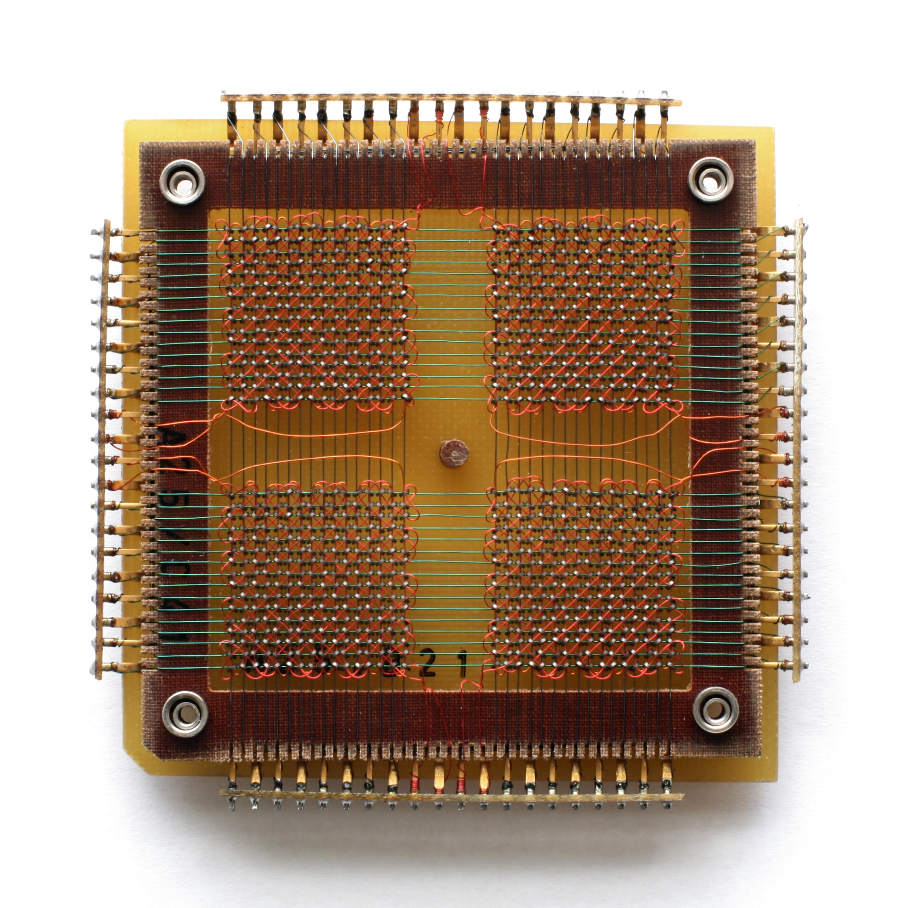
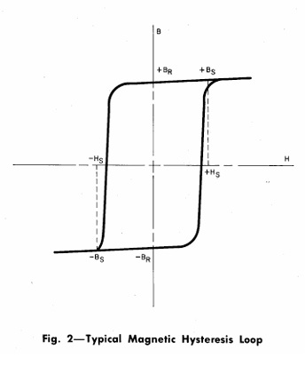
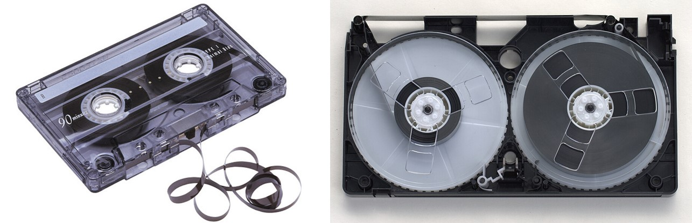
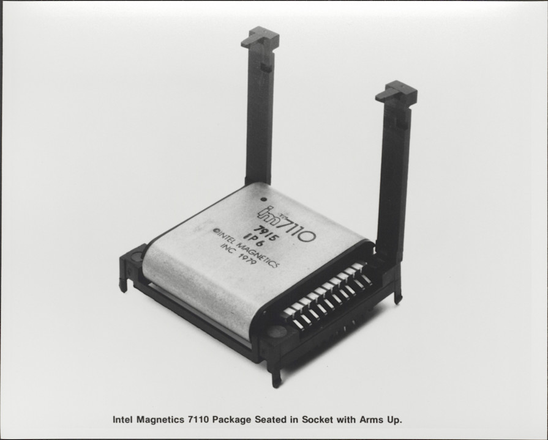
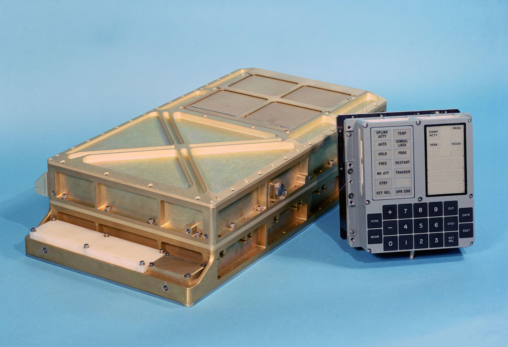

Remembering Magnetic Memories and the Apollo AGC
4th March 2026Memories, both human and magnetic
In the 1960s NASA engineers made a technical decision that would define the relationship between astronaut and spacecraft: when complex decisions, precise coordination and fast reactions were required, how should a spacecraft be controlled? They decided, in anticipation of developments in so many areas of society, that the best results would be achieved with digital execution subject to human oversight; the human brain would be paired with an artificial memory comprised of wires and magnets.
The evolution of digital computing in the middle of the 20th century placed challenging demands on memory technologies. Engineers required ever-more memory at a lower cost, faster access speed, higher density and with greater reliability than previous technologies. This provided the conditions for a creative period of iterative invention and development of magnetic memory technologies which slowed only when semiconductor-based memories came to dominate from the 1970s.
It's these magnetic memories that I decided to explore, understand (at least superficially) and illustrate.

{kind=link}
Computers in spaceflight
In 1962, President John F. Kennedy famously committed NASA’s Apollo mission to landing a man on the moon before 1970. As NASA engineers scrambled to turn this objective into an achievable technical program, they came to understand the complexity of the task. Spacecraft would exceed the speed of sound, entering a new aerodynamic paradigm – and that before exiting the Earth’s atmosphere entirely and travelling by gravitational influences and thrust reaction alone. Astronauts could simply not react fast enough or in such abstract terms to control a craft travelling over 11 km/s and accurately and fuel-efficiently reach a target 384,000 km away.
Flying such a craft, they reasoned, would be more akin to extremely rapid control-feedback and solving complex equations than piloting a conventional plane. Even the lunar landing, a short period of manual control, was in fact mediated by the guidance computer, which operated feedback loops between the pilot’s controls, sensors and the craft’s actuators.
Assigning these tasks to the guidance computer led to the development of a specification; the Apollo Guidance Computer (AGC) needed to be able to make observations about the spacecraft’s state (e.g. velocity, position) at a suitable rate and then apply known information and calculations to decide which actions should be made to keep the craft on course.
 Above: Interior of Apollo spacecraft. The 'DSKY' (pronounced diss-key) or display and keyboard was the main user interface for the apollo AGC and is located above the astronaut's left hand. To execute a command the astronaut entered a 'verb' using a 2-digit code, followed by a 'noun' (also 2-digits). Click to open full-size.
Above: Interior of Apollo spacecraft. The 'DSKY' (pronounced diss-key) or display and keyboard was the main user interface for the apollo AGC and is located above the astronaut's left hand. To execute a command the astronaut entered a 'verb' using a 2-digit code, followed by a 'noun' (also 2-digits). Click to open full-size.
The AGC therefore needed to store the data and programs required to complete mathematical calculations and to interface with sensors, actuators and the user interface. Executing a program thus required read-only memory (ROM) to be loaded and commands to be executed using sensor data – which had to be held in temporary random-access “erasable” memory.
What made the AGC’s memory cores so specialised was not so much the quantity of data it stored or the calculations it would run but the constraints that applied to it. The memory needed to operate reliably while withstanding vibration, temperature and radiation, all while being as physically small and lightweight as possible.
Remembering Magnetic Memory
As I set myself the task to research and understand each technology a great amount of confusion set in. Many of these technologies are well known, but rarely explored in much technical depth. Good quality archival materials are hard to find online – I wanted images of examples, diagrams and technical details of components, dates of production or development and meta-information like materials, developmental history and performance characteristics.
While I’m sure each of these technologies features prominently in archives, private and public collections and museums, it seems like an approachable account of magnetic memory development is surprisingly hard to find. So, I sought to humbly contribute, at least far enough to satisfy for my own interest.
Above: Detail from the cover of the 1984 Intel Memory Components Handbook. Click to open full-size.{kind=link}
But first, a note on memory itself, and an introduction to the parameters that help engineers categorise and describe memory technologies.
- Memories can be read/write or read-only. Read/write (or “erasable” in NASA terminology) memories are those which permit data to be changed/re-written as part of normal use. Read-only memory (ROM) cannot be easily changed.
- Memories can be sequential or random access. If data has to be read in address sequence the data is sequential, otherwise if data can be read regardless of where in the memory it is stored the technology allows random access. As we will see, many memories can be read from a random address, with additional latency, despite being stored sequentially.
- Memory can be volatile or non-volatile. Volatile memory is lost when the system loses power, non-voltage memory is retained on power-off. As far as I’m aware, all magnetic memory technologies are non-volatile, so we don’t need to worry about that.
- Memory can feature a destructive-read, where data is removed from memory when read and must be re-written if still of use. I don’t know if this is a property that would ever be desired or is just a technological side-effect, give that there is a technical cost attached to additional re-writing operations.
- In terms of other factors, the 1984 Intel Memory Components Handbook summarises an engineer's requirements as access time, cost, memory size, power consumption and environmental considerations. Together with the memory category and engineer sought, he or she could make an appropriate selection if they knew the order of priority for each factor.
Links to each memory:
Introduction: Memory, both human and magnetic
- TROS (Transformer Read Only Storage)
- Core rope memory
- Magnetic core memory
- Magnetic tape memory
- Bubble memory
Conclusions: Remembering obsolete memories
TROS (Transformer Read Only Storage)
Esoteric rating: hobby project
Complexity: punch-cards on PCBs
Read-only
Random access
When was it developed, and by who?
First developed by T. L. Dimond in 1945, Bell Laboratories. Used by IBM in their early mainframe computers. It surely complemented IBM’s punch-card computing machines by retaining a similar programming workflow.
{kind=link}

Above: An illustration of TROS memory. Click to open full-size.How does it work?
A single conductor encodes a word by passing inside or outside numerous ferrites (the number of ferrites determining the word length), each with a sensing coil looped around to form a transformer. When a particular conductor (corresponding to a specific memory address) is energised an output current is induced on each ferrite that the conductor passes through, signifying a “1” bit. Ferrites that the conductor passes outside of do not have a current induced and thus signify a “0” bit.
In IBM’s implementation for the System/360 mainframe computer the ferrites are rectilinear “U” shapes and arranged in pairs in two rows, with a bar fixed on top to complete the flux loop. This allows the ferrites to be conveniently opened.
{kind=link}

Above: Transformer matrix ROM (TROS), from the IBM System/360 Model 40. Click to open full-size. By RTC, CC BY-SA 3.0, WikimediaData was encoded on mylar (a trade-name of PET, a useful electrical insulator that would have been fairly novel at the time, being patented in 1948). The mylar sheets had 2 copper tracks which passed both inside and outside rectangular cutouts for the 2 rows of ferrites. The sheets could be punched on one of the 2 tracks to encode a 1 or 0 as described above. There were 60 ferrites (i.e. each word was 60 bits) and each sheet had 2 conductors running inside or outside each, meaning 120 bits per sheet.
The mylar sheets were then slotted around the ferrites and stacked above each other and the ferrites were closed with bars at the top (which featured the electrical windings for reading the bits. The conductors on each Mylar sheet were terminated to allow connection for addressing.
Benefits?
Fairly easy to re-program, involving opening the assembly and replacing Mylar sheets. IBM certainly had experience with punch-card programming and because this method could be employed to encode data onto the mylar sheets it must have been easier for programmers of the computers to use.
Drawbacks?
Very bulky and allegedly slower than other technologies. The bulk may not have been an issue for IBM’s early mainframes but would have precluded its use as memory requirements grew and computers shrunk. Speeds was another limitation.
References
Core Rope
Esoteric rating: Space enthusiasts remember
Complexity: Rocket science / Expert level electro-knitting
Read only
Random access
When was it developed, and by who?
I’m not sure. Wikipedia alleges it was used in the UNIVAC I in the early 1950s, but the description of memory even in the UNIVAC II seems to match magnetic core memory, not core rope memory. It is certain that the MIT’s Instrumentation Lab (IL) made use of core rope in the Apollo Guidance Computer (AGC) in the early 1960s.
 Above: An illustration of core rope memory. Click to open full-size.
Above: An illustration of core rope memory. Click to open full-size.
How does it work?
There are a large number of larger-diameter magnetic cores – one per word. These cores must have a high magnetic permeability and have highly rectangular electro-magnetic induction characteristics; an example material being tapewound Molybdenum permalloy. What this means is that the magnetic cores are very sensitive to a changing magnetic field, and are “bi-stable”, that is, they always exist in one of two stable states (opposing polarisations). The cores can therefore be reliably and suddenly flipped between the two states if exposed to a certain electromagnetic field.
In practice this “flipping” of the core is achieved by passing a sufficient current through a conductor passing through the core. The direction of the current will dictate the polarisation of the core.
An array of cores (1 core per word not per bit!) is then threaded with wires, which serve different functions:
- Data wires, which encode bits depending on whether they pass inside or outside a core. The number of data wires determines the word size. Data wires which pass through a core encode a “1” and those outside encode a “0”
- Set/reset wire, which passes through every core and which is pulsed with enough current to set the polarisation of the magnetic cores, flipping any cores which aren’t already in that state
- Inhibit wires, which are used to address cores by opposing the electromagnetic field of the set/reset wire. The inhibit wires are structured in pairs, allowing the address to be encoded in binary, by passing inside or outside each core. Therefore, the number of address pairs is equal to the squareroot of the number of addresses (cores); for example, one inhibit pair could address 2 cores and 2 pairs could address 4 cores.
{kind=link}

Above: Closeup of Core rope. Click to open full-size. Source, via Ken ShiriffWith that information let’s look at the function.
Core rope memory is read only once manufactured, yet to read an address proceeds in two stages. Recalling that each core addresses one word, the first stage is to flip the core which is to be read. The second stage is to flip that core again to read the bits in the word.
Stage 1:
A particular word is selected from the address by energising the binary combination of inhibit wires, resulting in all cores being inhibited except one. At the same time, the set/reset wire is energised with opposite polarity current to the inhibit wires – the net result being the addressed core being magnetically saturated into the “1” position.
Stage 2:
With only one core set, the set/reset wire is pulsed again in the opposite polarity to cause that single core to flip back to an unset state (“0”). This flipping induces a current in all data wires which pass through it (representing a binary “1”) and not affecting any which were wired around the core (a binary “0”).
Benefits?
Because the wires carry very low currents they are not bulky at all – in contrast conventional core memory encountered practical limitations in scale of the cores themselves. Thus by using one core per word rather than per bit, memory could be stored in very high density for the time. Early Apollo core rope modules had 128 data wires per core, later increased to 192 and with 512 cores per module and 4 modules, that achieved in excess of 500 kilo bits for the apollo guidance computer.
Once it was learned that astronaut urine could short-circuit the memory it was potted in a plastic resin – making the memory extremely robust once manufactured. These advantages made core rope a lightweight and space-efficient (get it?) technology suitable for the needs of the Apollo program.
Drawbacks?
Extremely expensive and time-consuming to manufacture. Programming or manufacturing errors are extremely difficult to inspect or debug. No method for full automation of wiring the cores was developed, making this technology unsuited to general or industrial use.

Above: Manufacture of core rope memory at Raytheon. In an uncropped version of the photo, a sign reads "Apollo production area". Click to open full-size. Source, via Ken ShiriffReferences
Wikipedia, Youtube - Curiousmarc, a well-detailed technical explanation, Ken Shiriff's blog, focusing on the AGC, The Rope Memory - a permanent storage device, P Kuttner (1963), The Apollo Guidance Computer, Ramon L. Alonso and Albert L. Hopkins (1963)
Magnetic Core Memory
Esoteric rating: Medium
Complexity: Expert level electro-knitting
Read/Write
Random access
Destructive read
When was it developed, and by who?
Patented by Jay Forrester in 1951 while working at MIT on the Whirlwind I computer for the US Navy. A fun fact is that Forrester was the first to explain the Bullwhip effect, studying it in his retirement.
 Above: Illustration of core memory Click to open full-size.
Above: Illustration of core memory Click to open full-size.
How does it work?
Tiny cores are arranged into a “plane”, being suspended in a grid comprised of a lattice of rows and columns of insulated conductors, with the cores held in crossing points between conductors. In this plane, the (X,Y) crossing point corresponding to a memory address. Because each core would store 1 bit, a word was created by stacking multiple planes to create an array.
{kind=link}

Above: A single plane of Core memory. Click to open full-size. By Konstantin Lanzet - received per EMailCamera: Canon EOS 400D, CC BY-SA 3.0, wikimediaThe cores have a highly square hysteresis characteristic and non-soft magnetic materials (i.e., the cores are bi-stable, highly sensitive to electromagnetic fields but will never flip state after repeated exposure to partial fields).
{kind=link}

Above: Diagram of a square hysteresis loop. From "Telephone Memory Devices", 1968, AT&TCo. (Download) Click to open full-size.A bit could be written to a specific address by energising a single “Y” wire and “X” wire, which would together provide enough current (and thus electromagnetic field) to flip the magnetic state of only the core at which they intersected; the polarity of current applied thus determined if the bit was “0” or “1”. To write a word, the same (X, Y) wires on each plane in the array were simultaneously energised.
A sense wire was woven diagonally through the cores, passing through each core once. To read a memory address, the same (X, Y) wires were energised but in the “0” polarity. If the core was holding a “1” this would cause it to flip to a “0” state. As the core’s magnetic polarity flipped it would emit an electro-magnetic field that would induce a current in the sense wire.
Because this was a destructive read, the core’s value had to be immediately re-written unless no longer required – slowing down the read speed.
Benefits?
Erasable and relatively space-efficient. Reliable.
Drawbacks?
Mechanical limits to miniaturisation – engineers developed incredibly small magnetic cores for this technology but physical limits were imposed by the need to ensure that nearby cores were not energised during operations. Faster than alternatives.
References
Wikipedia, a well-detailed explanation, original patent, Telephone Memory devices (1968)Magnetic Tape memory
Esoteric rating: Low, but increasing
Complexity: Medium
Read/Write
Sequential read, but random access is possible
When was it developed, and by who?
IBM, first commercialised as “UNISERVO” for the “UNIVAC I” computer in 1951 and later widely adopted.
 Above: An illustration of magnetic tape memory. Click to open full-size.
Above: An illustration of magnetic tape memory. Click to open full-size.
How does it work?
A thin plastic tape is coated with a magnetic material (noted as typically red iron oxide by Bell in 1968). This tape is wound around two servomotor-controlled reels such that it can be wound from one onto the other. As the tape is wound/unwound it passes very close to (or in direct contact with, but this increases wear) a read/write head.
{kind=link}

Above: Left: Audio cassette tape. Right: VHS Tape (Credit: Toby Hudson, CC BY-SA 2.5 AU). Click to open full-size.The read/write head can enter data into “blocks” in the tape as it moved past – this is done by applying a magnetic field to the tape. This is achieved by a core with a coil wound around it, and a gap in the core for the tape to wind through. Depending on the polarity of current applied to the coil a “1” or “0” will be magnetically encoded into the corresponding address location on the tape.
Data is read in the opposite manner, with the moving magnetic tape inducing a current in the read head according to its polarity.
Benefits?
Readily expandable – just add more tape. In fact, I was surprised to discover that Oracle still sells a magnetic tape solution for data archival, scalable to 57.6EB. Data density could be increased by reducing the size of each magnetic block, or by adding more read/write blocks on the head (by increasing the width of the tape).
Of course, what comes to mid are the mass-manufactured industry standards for magnetic tape technologies, such as the audio cassette and VHS. These proved long-lived, only really made obsolete by the higher density, lower cost and (arguably) more robust optical storage formats: CD and DVD.
Drawbacks?
Data could be lost if the tape is exposed to a magnetic field. Tapes can also become mechanically worn, and are no match for curious children.
Random access is possible but with a large latency as the servomotors have to wind the tape to the appropriate address location.
References
WikipediaBubble memory
Esoteric rating: High
Complexity: Doesn’t sound real
Read/Write
Sequential, but random access is possible
Destructive read
When was it developed, and by who?
Developed in the late 1960s at Bell labs by numerous researchers including Paul Michaelis and Andrew Bobeck, patented in 1966 and ownership transferred to AT&T. It enjoyed a brief period of high hopes and modest industrial application before advantages in memory density and robustness were overtaken by improvements in hard drives and electronic memory technologies.
 Above: An illustration of bubble memory. Click to open full-size.
Above: An illustration of bubble memory. Click to open full-size.
How does it work?
A thin magnetic film (less than 0.001 inch) is placed between two permanent magnets which break up the magnetic domains in the film into uniform cylinders 3 micrometres in diameter. This is called the magnetic bias field.
At one end of the film is a so-called bubble generator with a rotating magnetic field at a metal patch, split by a non-magnetic pin shaped conductor. The rotating field creates and stores a seed bubble that is held in position by the metal patch.
When an electrical pulse is applied to the pin the seed bubble is split and half is thrown by the rotating field into the start of a track – the other half remains under the patch and regains its full size. A “1” has been entered into the shift register – no pulse would have omitted a bubble and represented a “0”.
The bubble, a tiny region of magnetic polarity, is then moved along the film by applying a second magnetic field to the film perpendicular to the permanent bias field. To keep the bubble travelling in an accurate path it is guided by minute structures of magnetic film. Coils around the bubble memory film create “X” and “Y” fields which are energised to create a rotating field in the film, which moves each bubble around discrete permalloy guides according to the field’s rotation rate. As Intel remark “various shapes for these metallic patterns have been used by different manufacturers…at Intel asymmetric chevrons are used”. The coordinated addition (or omission) of bubbles at the seed pin and discrete stepping along the chevron track creates a shift register.
Before being entered into the main memory the bubble is sent along the input track. When the input track is full (64 bytes in the Intel 7110 chip) all bubbles are inserted into storage loops in parallel. This process is called swapping, because as the bubbles are inserted into storage loops they take the place of an old bubble or bubble-gap. The swapping structure looks like a claw, one end which transmits the new bubble into the storage loop (with an electromagnetic pulse that pushes but does not split the bubble) and the other which guides the old bubble out of the storage loop to the input track, where is it sent for destruction.
Once written into the storage loop, data is retained in sequential order in rows of chevrons and waits, stationary, until further reading or writing is carried out.
Reading is carried out in two stages; firstly replication of the appropriate bubble (or vacancy) from the storage loop to the output track and secondly detection. The bubble is replicated in a similar way to bubble generation; a current pulse on a hairpin splits the bubble, half of which is returned to its position in the storage loop and the other half being propelled to the output track.
On the output track bubbles are passed through a magnetoresistive structure which allows an electrical circuit to detect changes in the magnetic field as changes in resistance. Once bubbles have been read they are obsolete and destroyed.
Benefits?
The 1984 Intel Components Handbook claims speeds with tens of thousands of bits per second after an initial latency of tens of milliseconds. They reference “a million or more bits per device” - a very high memory density at the time. Other key benefits include non-volatility, unlike some contemporaneous competitor electronic memories, and no moving parts, unlike hard-drives. This led to adoption in extreme and military applications. Konami briefly used bubble memory for its arcade hardware where a further advantage (for distributors) was preventing games from being duplicated.
{kind=link}

Above: Intel 7110 bubble memory. Click to open full-size.Drawbacks?
While the manufacturing process has some similarities to that for integrated circuits, unlike the claims of the 1966 patent that “channels are defined simply on a magnetic sheet by equally simple printed circuit techniques”, challenges in manufacturing at scale led to higher costs than other memories. The need for complex electronics to control functions like bubble generation, splitting, swapping and reading also added cost and power consumption.
The technology also has to contend with inefficient random access; bits within each storage loop had to be read and replicated sequentially, resulting in additional latency, similar to other sequential memories.
References
Wikipedia, original patent, Intel memory components handbook 1984, Journalistic retrospective, 'electrickery' blog, HackadayRemembering obsolete memories
So, some half a century on, what can we take from the development of these magnetic memories?
Each technology is a response to the requirements of certain applications within the bounds of available knowledge and technical capabilities. Looking at technology in this solution-oriented way, each innovation was, essentially, the result of a change in requirement or capability; exactly the same applies today.
In fact, in a way I've underrepresented the variety and ingenuity of magnetic memory devices. Numerous other schemes have been developed or iterated on, either in concept, prototype or commercial deployment. A few I omitted include twistor memory, EM coupling, ferrite sheet, as well as variations on core memory.
MIT engineers selected memory technologies which best met the needs of their system; core rope for the ROM and core memory for the RAM. Each had high memory density for the time, paired with suitable environmental robustness as a result of having no moving mechanical parts that could be disrupted during spaceflight. Cost and complexity of manufacture (and, in the case of core rope, near-impossibility of rework) was a drawback which NASA could accept.
{kind=link}

Above: AGC memory module alongside DSKY. Click to open full-size.I’d like to conjecture that bubble memory might have been considered if it was available at the time; its higher memory density and access speed would have been advantages. Indeed, Intel's 1980s marketing materials propose bubble memory as being suitable for aircraft navigation, avionics and robotics, as well as in “severe environments”.
Indeed, as memory technology has developed spacecraft today exclusively use electronic memories; DRAM, SRAM, Flash and EEPROM. It is more cost-effective to radiation-harden these technologies than to use alternatives. Yet, even these technologies may not enjoy their eminence forever as manufacturers continue to research replacements. A 2009 presentation proposes technologies such as ferroelectric RAM, Magnetoresistive RAM and Chalcogenide RAM.
Spacecraft aside, memory requirements are also changing. I personally have over 200Gb of data stored on my PC and backed-up in the cloud, alongside 1Tb of TV shows. This hoard never shrinks, only grows, and I’m just one of Earth's occupants. We therefore need highly power-efficient memories suitable for long-term storage without degradation, to reduce power use and consequent costs and environmental impacts.
In turn, technology companies have recently embarked on a generational-scale quest to ingest, process and regurgitate all of humanity’s data via subscription-based chatbots. The most talked-about technological frontiers of Artificial Intelligence infrastructure are power generation and storage for datacentres, processor (GPU and TPU) performance and cooling and communications technologies (such as fibre to the chip or radio-frequency communications), I wonder if there’s a shift in memory requirements too.
So, as our requirements continue to change, engineers will continue to develop new memory technologies – but I want to end with a nod to preservation efforts. Just as I have struggled to uncover detailed information about these obsolete memory technologies, there is a popular race to preserve culturally important media stored on obsolete formats. Changes in memory technology, among others, has erected technological barriers around their preservation and use.
Let’s not treat obsolete memory formats and technologies as incidental compared to the data itself – we should instead preserve and remember them as equally relevant cultural artefacts.
I've been reading:
Digital Apollo, David A. Mindell (2008)
Telephone Memory Devices, AT&T Co (1968)
The Rope Memory - a permanent storage device, P Kuttner (1963)
The Apollo Guidance Computer, Ramon L. Alonso and Albert L. Hopkins (1963)